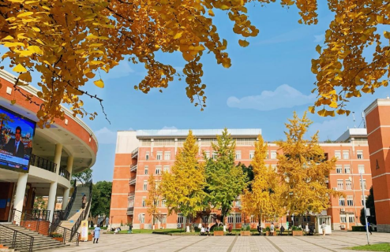

学院通知 · 科研创新
四川大学电子信息学院诚邀全球英才申报2025年国家自然科学基金优秀青年科学基金项目（海外）项目
发布时间：2025-03-04
一、学校介绍 四川大学是教育部直属全国重点大学，是国家布局在中国西部的重点建设的高水平研究型综合大学，是国家“双一流”建设高校(A类)。经过120多年的不懈努力，四川大学已经成为一所“综合性、研究型、国际化”的顶尖学府。学校由原四川大学、原成都科技大学、原华西医科大学三所全国重点高校经过两次“强强联合”而成。120多年来，历经堂院同归、“三水”汇流、“三强”合一，四川大学的发展积累了深厚的文化底蕴和扎实的办学基础，培育了以校训“海纳百川，有容乃大”、校风“严谨、勤奋、求是、创新”为核心的川大精神。 二、学院介绍 学院现有在编教职工129人，专任课教师100人，教辅8人，思政教师10人，管理人员11人。专任课教师中包含中国工程院院士、俄罗斯外籍院士、国家级人才计划入选者、科睿唯安高被引学者、国家重要人才计划青年项目入选者省市级各类人才计划。博士生导师43人，硕士生导师86人，教授（级）41人，副教授（级）42人，专任课教师具有博士学位占98%，45岁以下44人，占45.36%，教授45以下13人，具有博士学 历100%，全院教师91%的教师有海外留学和学术交流的经历。学院已经构建了一支以优秀学科带头人为核心、以中青年学者为骨干的学术梯队和以中青年教师为主体的师资队伍。 近年来，学院依托无线能量传输教育部重点实验室、国家级姑苏半导体激光创新中心、四川省光学重点实验室和四川省航空发动机及燃气轮机先进测试工程技术研究中心，形成了强激光及相关技术、无线能量传输、复杂系统电磁兼容、通信抗干扰等具有特色的研究方向。近年来，学院主持和承担了国家自然科学基金重大项目、国家安全重大基础研究、国家重点基础研究（ 973）、国家重点研发计划、国家重大专项、国家杰出青年基金、国家“863”、国家自然科学重点项目等国家级项目。近五年，有1500多篇论文被SCI检索，授权发明专利400余项。在高功率固体激光、微波化学、结构照明型三维成像理论与应用研究等领域的研究已达到国际先进水平，获国家技术发明二等奖4项，省部级奖励20多项。 国家自然科学基金优秀青年科学基金项目（海外）项目介绍 一 、项目定位 国家自然科学基金优秀青年科学基金项目（海外），旨在吸引和鼓励在自然科学、工程技术等方面已取得较好成绩的海外优秀青年学者（含非华裔外籍人才）回国（来华）工作，自主选择研究方向开展创新性研究，促进青年科学技术人才的快速成长，培养一批有望进入世界科技前沿的优秀学术骨干，为科技强国建设贡献力量。 二 、申请人条件 1. 遵守中华人民共和国法律法规，具有良好的科学道德，自觉践行新时代科学家精神； 2. 出生日期在1985年1月1日（含）以后； 3. 具有博士学位； 4. 研究方向主要为自然科学、工程技术等； 5. 在取得博士学位后至2025年4月15日前，一般应在海外高校、科研机构、企业研发机构获得正式教学或者科研职位，且具有连续36个月以上工作经历；在海外取得博士学位且业绩特别突出的，可适当放宽工作年限要求（不适用于通过中外联合培养方式取得海外博士学位的情况 ）。 在海外工作期间，同时拥有境内带薪酬职位的申请人，其境内带薪酬职位的工作年限不计入海外工作年限。 6. 取得同行专家认可的科研或技术等成果，且具有成为该领域学术带头人或杰出人才的发展潜力； 7. 申请人尚未全职回国（来华）工作，或者2024年1月1日以后回国（来华）工作。获资助通知后须辞去海外工作并全职回国（来华）工作不少于3年。 三、申请时间与方式 1.申请时间：即日起至2025年4月13日。 2.申请方式：即日起，申请人可发送简历至下方邮箱，联系我院签订意向性协议，我院采取学术导师“一对一”指导，将安排专人针对资料整理、申报指导等进行一对一服务。请将个人简历以“姓名+院系+2025优青项目（海外）申报”命名，发送至我院联系邮箱（wxling@scu.edu.cn），并抄送至四川大学人才办邮箱（rcjhscu@scu.edu.cn）。 联系人：吴老师 即日起，申请人可联系我院签订意向性协议。 电话： +86-028-85460933 邮箱： wxling@scu.edu.cn 学院主页： http://eie.scu.edu.cn 电子信息 学院高度重视人才引进与培养，全力打造适宜人才成长的事业平台、工作环境和生活条件，建设良好的聚才、用才和成才环境，为人才的成长与发展提供全方位支持。 我们诚邀您的加盟，为您搭建优质的学术平台，营造有利的科研环境，提供完善的服务保障，助您施展才华、成就学术大师梦想！
